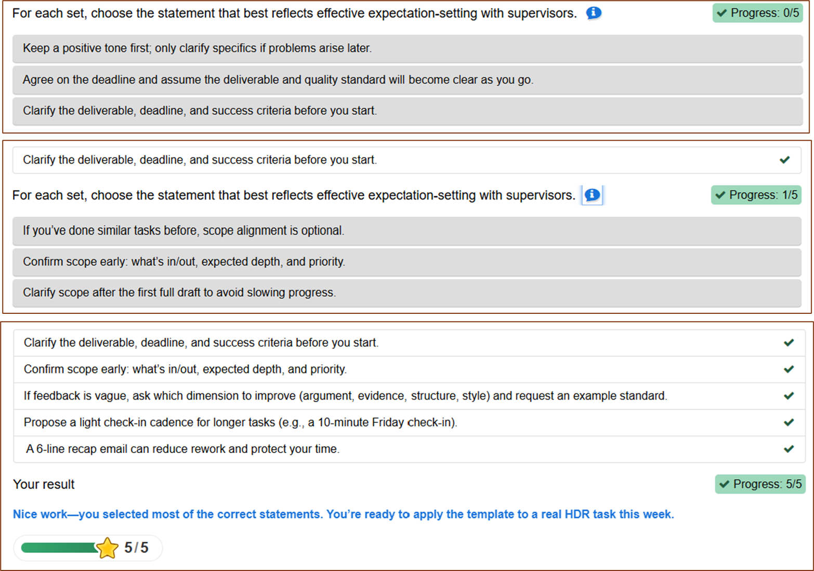
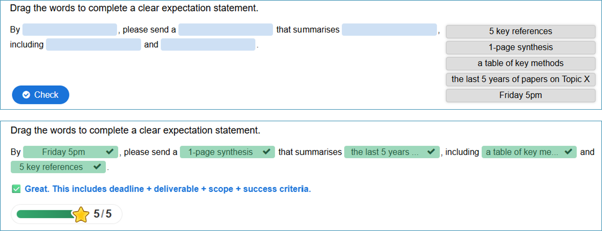

Managing Supervisor Expectations (HDR) – Interactive Micro-module
Audience: Higher Degree by Research (HDR) candidates
Estimated time: 6–8 minutes
Format: H5P activities exported as standalone HTML (open in Chrome/Edge)
Design approach: needs-based, outcomes-aligned, QA-informed
Learning outcomes
- Clarify “what done looks like” using deliverable + deadline + success criteria
- Align scope and quality standards early to reduce rework
- Use a short written recap to confirm agreements and next steps
How I designed this
- Needs: HDR candidates often begin without explicit supervisor expectations, which can lead to misalignment and avoidable delays.
- Outcomes: Learners leave with a clear expectation set (deliverable + deadline + quality criteria) and a plan for a short written recap.
- Learning experience: A short sequence (diagnostic → practice → recap → transfer task) to build confidence and support real-world application.
- Quality & accessibility: Plain language, consistent layout, and mobile-friendly testing; clear instructions to reduce cognitive load.
- Evaluation: End-of-module reflection plus interaction/completion checks to inform the next iteration.
Sample screens (quick preview)
Information Wall — context & key message

Summary — key principles recap

Drag the Words — guided practice

Questionnaire — transfer to real task

How to view
- Keep all files in the same folder as this
index.html
- Open
index.html in Chrome or Edge
- Complete the activities in order (1 → 6)